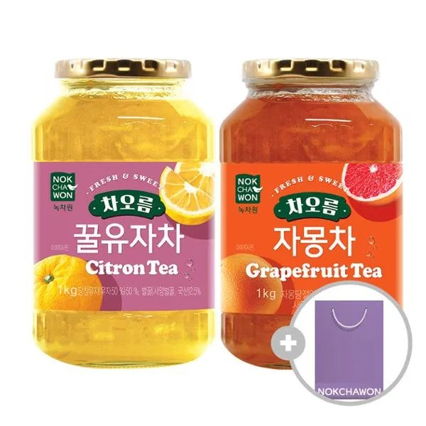

유자차
유자차 — 유자청을 물에 타 마시는 한국 차.
유자차는 유자청을 따뜻한 물에 풀어 마시는 한국 차입니다. 마트·백화점·공항에서 병·선물세트로 많이 팔리고, 감기 기운·겨울 선물로도 고릅니다.
유리병은 무겁고 깨지니 완충재를 요청하세요. 당도가 높아 보관은 개봉 후 냉장하는 제품이 많습니다.
유자차는 유자청을 따뜻한 물에 풀어 마시는 한국 차입니다. 마트·백화점·공항에서 병·선물세트로 많이 팔리고, 감기 기운·겨울 선물로도 고릅니다.
유리병은 무겁고 깨지니 완충재를 요청하세요. 당도가 높아 보관은 개봉 후 냉장하는 제품이 많습니다.
사는 팁
구매 팁 플라스틱·파우치형이 비행기에 더 안전하고, 선물용은 백화점 세트가 포장이 깔끔합니다.